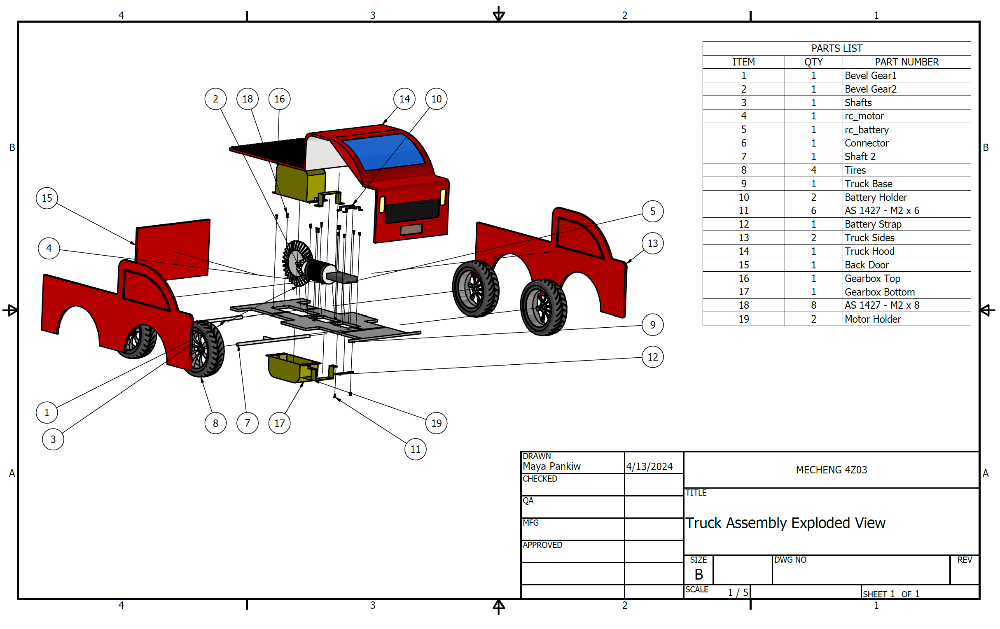

Remote-Controlled Vehicle Design
CAD/CAM/CAE mechanical design and simulation
Remote-Controlled Vehicle Design
This CAD/CAM/CAE project involved the design of a fully functional remote-controlled pickup truck assembly using Autodesk Inventor.
The project required integration of mechanical design, drivetrain layout, simulation, and manufacturing workflows into a complete system.
This work presents the design of a remote-controlled vehicle developed through CAD modeling, engineering drawings, simulation, motion analysis, and topology optimization.
Highlights of Design Project:
- Designed a full vehicle assembly in Autodesk Inventor including drivetrain and gear system components
- Created detailed engineering drawings and a bill of materials (BOM) for the complete assembly
- Performed stress simulations and mesh convergence analysis to evaluate component performance
- Conducted motion studies to validate gear interactions and overall mechanical functionality
- Applied CAD/CAM workflows including additive manufacturing simulation and topology optimization
This project demonstrates experience in mechanical system design, simulation-based evaluation, and design-for-manufacturing workflows. It brought together assembly modeling, analysis, and optimization within a single integrated CAD/CAM/CAE project.

Exploded assembly drawing with bill of materials and component hierarchy.